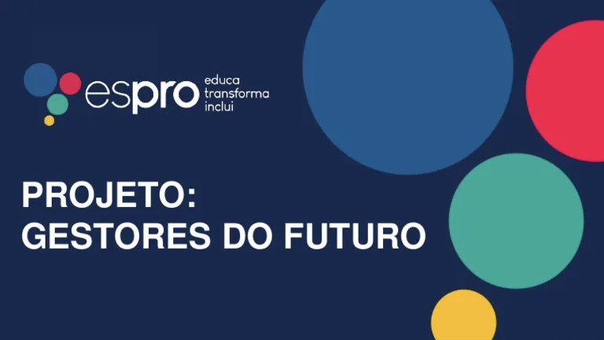
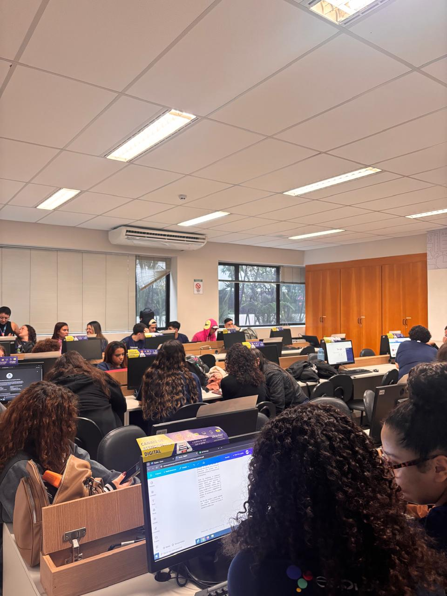
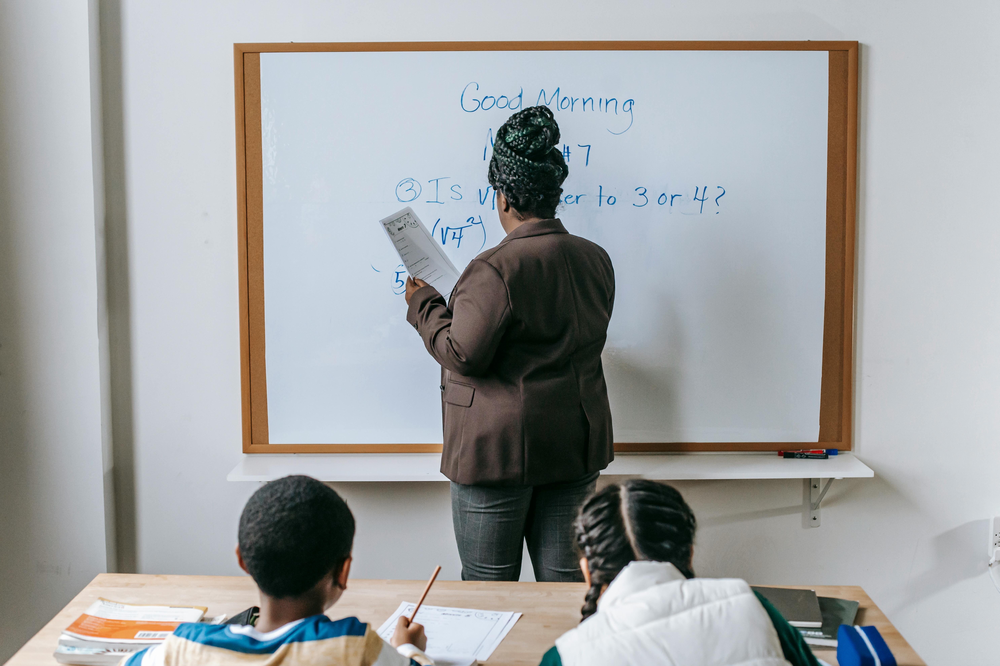

Espro
Últimas do Programa


Espro
Turma 16657 da Espro se organiza para apresentação Gestores do Futuro
Alunos se preparam com dedicação para apresentar projetos e desenvolver habilidades voltadas ao mercado profissional..

Economia
Parceria com Key Up Abre Novas Portas para os Aprendizes
Escola de idiomas amplia as possibilidades de qualificação dos jovens.

Espro
Como o Espro Prepara os Jovens para o Mercado de Trabalho
Metodologia une teoria e prática em um formato dinâmico e eficaz.

Espro
Autonomia, Senso Crítico e Confiança: o Tripé da Formação
Ao longo da formação, fomos incentivados a desenvolver autonomia e construir nossos próprios caminhos.
Espro
Educação, Cultura, Saúde e Carreira Juntas
Quando todas essas dimensões caminham juntas, a formação profissional se transforma em formação cidadã.
Economia
Novas Oportunidades no Horizonte
Conhecer essas iniciativas ampliou nossa visão de futuro e incentivou a continuar investindo no próprio desenvolvimento.